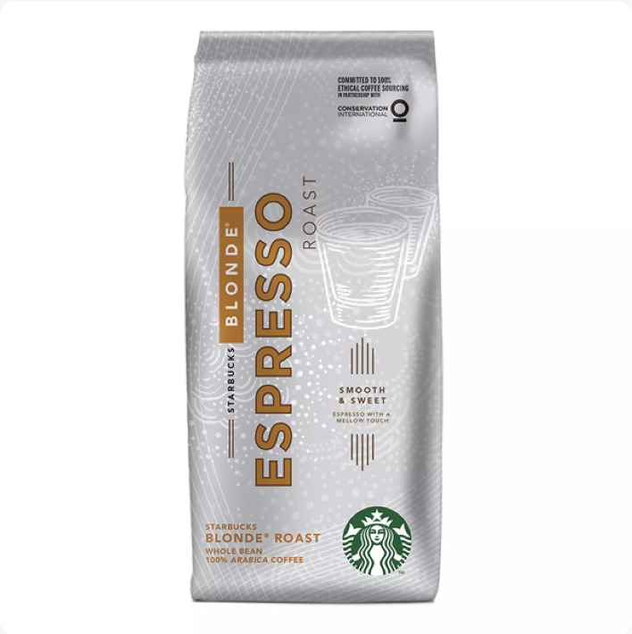

Onze Koffie
Bij Starbucks gaat het sinds het begin al om de kwaliteit van de koffie.
Onze passie voor koffie wordt alleen overtroffen door onze liefde om het te delen.
Of je nu thuis geniet van een momentje voor jezelf of samen met gasten een nieuwe zak koffiebonen opentrekt,
het is altijd een ervaring, een explosie van aroma en een gevoel van thuiskomen.
Met zoveel Starbucks koffiebonen om uit te kiezen is het moeilijk om jouw persoonlijke perfecte kop te vinden.
We helpen je graag opweg.
Het Starbucks Roast™ Spectrum
Onze koffies zijn ingedeeld op basis van drie brandprofielen: Blond, Medium en Dark, zodat je de smaak en intensiteit kunt vinden die bij je past.
Meer over Blonde Roasts
Starbucks® Blonde Roast-koffie is het minst lang gebrand en heeft daardoor een zachte en lichtzoete smaak.
Het is een benaderbare en smaakvolle kop koffie met lichte hints van de branding.
Medium Roasts
Smooth en gebalanceerd, onze medium roasts zijn perfect voor elke koffiemomentje.
Dark Roasts
Deze koffies zijn krachtiger door het lange brandingsproces.
De robuuste smaken komen naar voren door de intense branding en produceren een koffie met rijke en volle smaken.
Starbucks Blonde Roast
 Blonde RoastsColombia Nariño
 Medium Roasts
Medium Roasts
Pike Place
 Medium Roasts
Medium Roasts
Guatemala
 Medium Roasts
Medium Roasts
House Blend
 Medium Roasts
Medium Roasts
Ethiopia
 Medium Roasts
Medium Roasts
Kenya
 Medium Roasts
Medium Roasts
Sumatra
 Dark Roasts
Dark Roasts
Caffe Verona
 Dark Roasts
Dark Roasts
Decaf Espresso Roast
 Dark Roasts
Dark Roasts
Espresso Roast
 Dark Roasts
Dark Roasts
Wellicht heb je er nog niet aan gedacht, maar wist je dat de verschillende brouwmethoden binnen Starbucks allemaal andere smaken in de koffie naar voren brengen. Laat onze kennis je helpen om de volle potentie te ontgrendelen van jouw favoriete koffie - voor de perfecte kop, elke keer opnieuw.
Coffee Press
Brewing with a coffee press retains the precious natural oils that paper filters absorb, and extracts the coffee’s full flavour while giving it een consistentie die dik en rijk is.
1. Grind and measure
Remember, coffee is like produce. Buy it often in small quantities to enjoy it at the peak of freshness. TIP: Remember, coffee is like produce. Buy it often in small quantities to enjoy it at the peak of freshness.
2. Add hot water
To give your coffee the best possible flavour, use filtered or bottled water. TIP: To give your coffee the best possible flavour, use filtered or bottled water.
3. Place plunger and brew
Put the plunger back on the press zonder hem naar beneden te duwen, en laat de koffie 4 minuten trekken.
4. Press and pour
Gently push down the plunger until it reaches the bottom of the press, and enjoy.
Pour-over
Pour-over is a beautifully simple and accessible way to brew a single cup of coffee with clean, fully developed flavour and body.
1. Measure and boil
Measure as much water as je gaat gebruiken om te zetten, plus een beetje extra om het filter te spoelen, en breng het aan de kook.
2. Pre-moisten filter
Briefly rinse the paper filter met heet water en gooi het spoelwater weg. Dit geeft je koffie de zuiverste smaak.
3. Measure and grind
Next, measure je koffie. Voor pour-over, gebruik koffie gemalen voor een papieren kegel. Het is een relatief fijne maling die eruitziet als kristalsuiker. Meet 2 eetlepels koffie per 6 ounces water.
4. Pour and pause
Gebruik heet water dat net van de kook af is en vul de kegel voor de helft om de grounds te satureren. Pauzeer 10 seconden en laat de koffie bloeien. Dit zorgt ervoor dat de koffie gelijkmatig hydrateert en smaak ontwikkelt.
5. Complete the pour and enjoy
Om je pour-over consistenter te maken, gebruik een timer. Het zou ongeveer 3 minuten moeten duren om een kopje te maken.
TIP: Om je pour-over consistenter te maken, gebruik een timer. Het zou ongeveer 3 minuten moeten duren om een kopje te maken.
Iced Pour-Over

Iced pour-over is een eenvoudige en toegankelijke manier om rijke, volgesmaakte ijskoffie te maken per pitcher.
1. Pre-moisten filter
Rinse kort het papieren filter met heet water, en gooi het spoelwater weg. Dit geeft je koffie de zuiverste smaak.
2. Choose the right grind
Voor pour-over, gebruik koffie gemalen voor een papieren kegel. Het is een relatief fijne maling die eruitziet als kristalsuiker.
3. Measure
Iced pour-over wordt gezet op dubbele sterkte en verdund met ijs, meet dus 4 eetlepels koffie voor elke 6 ounces heet water.
4. Pour and pause
Gebruik heet water dat net van de kook af is en vul de kegel voor de helft. Pauzeer 10 seconden en laat de koffie bloeien, zodat het gelijkmatig hydrateert en smaak ontwikkelt.
5. Complete the pour
Voeg langzaam de rest van het water toe, giet in kleine, stabiele cirkels om alle grounds te bedekken.
6. Add ice
African coffees zijn populair voor iced pour-over vanwege hun sappige body en frisse citrusnoten.
TIP: African coffees zijn populair voor iced pour-over vanwege hun sappige body en frisse citrusnoten.
Coffee Brewer
Drip coffee is een gemakkelijke manier om geweldige koffie te zetten. Met de juiste maling en puur water, kun je een fantastische kop koffie zetten in een coffee brewer.
1. Choose the right grind
Voor een flat bottom filter, gebruik een medium grind dat lijkt op zeezout. Cone filters gebruiken een fijnere maling die lijkt op kristalsuiker.
2. Measure
Gebruik 2 eetlepels versgemalen koffie voor elke 6 ounces water.
3. Brew and enjoy
TIP: Brewed coffee is altijd het best vers, maak zoveel als je in één keer wilt genieten. Opwarmen kan de smaak verminderen.